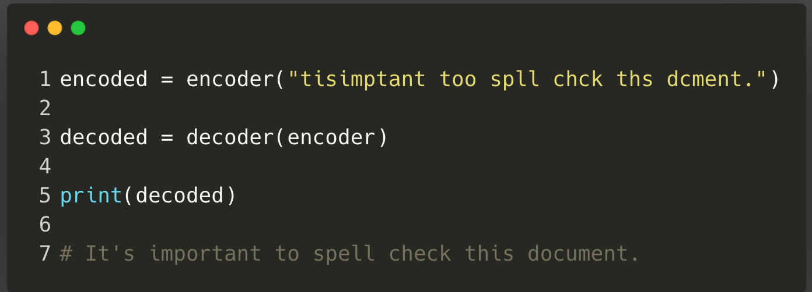
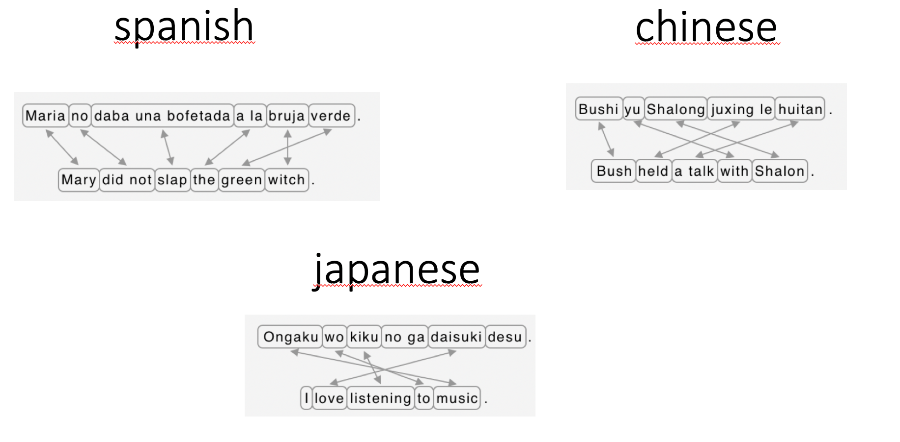
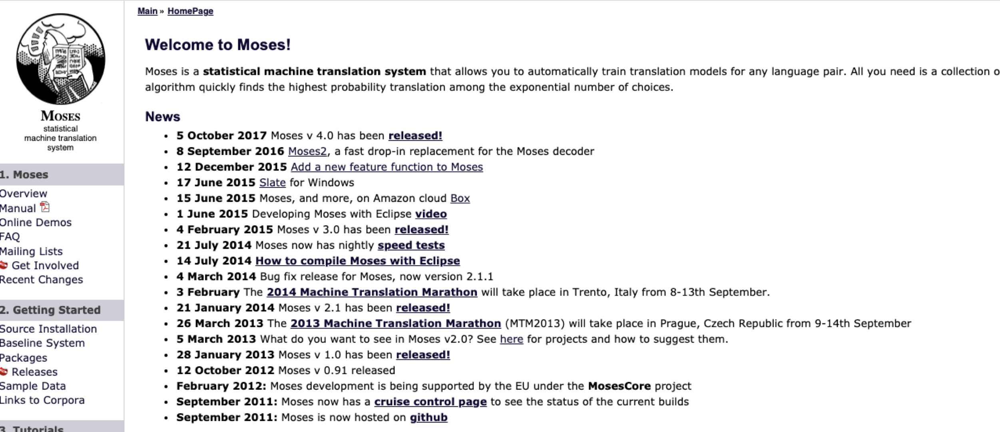

How to build a spell checker with deep learning¶
By Xiaoou Wang
Spell checker is like machine translation¶
Nowadays people are all more or less familiar with the term machine translation, which is implemented as the main function of a website like googletranslate or simply as part of a larger-scale software (software as a service).
However few people are aware that spell checker can also be considered using the same mindset as neural machine translation, meaning that the encoder would encode the grammatically incorrect sentences and the decoder would output the grammatically correct sentences.

Brief history on machine translation¶
Expert systems¶
At the very beginning, machine translation systems are called expert systems. An often quoted example is the Georgetown-IBM experiment started during the Second World War. The principle is quite simple: there is a dictionary allowing to translate from word to word, and the expert’s job is to take care of the aligning problem which consists of finding the right place for each word separately translated.
For languages like Spanish and English it is relatively simple because the word order is unlikely to change significantly during translation, however for languages like Chinese or Japanese even the smartest experts can quickly get overwhelmed.

Statistical Machine Translation¶
In 1980s, a new approach called Statistical Machine Translation becomes increasing popular. Basically people start leveraging power of machine learning and aided by some sophisticated algorithms, many systems translate parts of sentences rather than isolated words, which partially resolves the aligning problem.
A lot of bilingual/parallel corpus are established during this period in order to find “sentence piece†candidates from one language to another. The most successful system is called Moses with, hold your breath, more than 100000 lines of code! Understanding and installing such a system requires dozens of hours and only big companies can afford such a luxury.

Neural Machine Translation¶
If you look closely at the screenshot of Moses’ Website, you can see that the software is no longer actively maintained since the end of 2015, that’s mainly because of the publication of a ground-breaking article that starts a whole new trend in Machine Translation.

In this paper, researchers were able to provide a nice solution to long-distance translation precision, meaning that machines were able to understand sentences much longer than before. The solution is called today as attention mechanism and often applied on RNNs. It is also the predecessor of another revolutionary paper, attention is all you need by Vaswani, Ashish, et al..
Grammar Checker as a transformer¶
The paper of Vaswani, Ashish, et al. highlightes a new deep learning architecture called Transformer. The transformer always has an encoder and a decoder, however it get rids of recurrence and can thus be trained in much less time! In order to achieve this, a transformer uses self-attention in contrast to cross-attention used in early systems of Neural Machine Translation.
At this point you should already catch a glimpse of what we are going to do:
We are going to consider Spell Check as a sequence to sequence task: the encoder encodes a sequence of potentially wrong sentence and the decoder outputs the correct one.
We are going to use Transformer as the Seq2Seq model.
Where can we get the data ?¶
If you know the term data mining, it should be clear to you that data is essential in machine learning/deep learning. In our particular case, although you might get better results using Transformer rather than RNN, the margin of difference should be quite small. It is also the reason behind Andrew Ng’s calling for a more data-centric approach because many people have been busy training fancy models instead of collecting more quality data.
The main difficulty in constructing a high performance spell checker is to get enough data because such data are often proprietary.
The good news is that we can partially circumvent this problem by being creative!
Make data dirty¶
Suppose you have built a small spell checker using 1G data. This is a small amount of data in machine learning sense. However if you reverse the whole process, these 1G data can actually be used as a wrong sentence generator and in turn generate any amount of data that you desire.
This process of actively producing wrong sentences to supply large quantity data to models is called back-translation in the machine translation literature.
Want some code?¶
I encourage you to read this tutorial to see how simple it is to build a powerful spell checker with just tens of lines.
As a teaser/reminder, here is what the final system is capable of:
References¶
Vaswani, A., Shazeer, N., Parmar, N., Uszkoreit, J., Jones, L., Gomez, A. N., … & Polosukhin, I. (2017). Attention is all you need. arXiv preprint arXiv:1706.03762.
Bahdanau, D., Cho, K., & Bengio, Y. (2014). Neural machine translation by jointly learning to align and translate. arXiv preprint arXiv:1409.0473.
Edunov, S., Ott, M., Auli, M., & Grangier, D. (2018). Understanding back-translation at scale. arXiv preprint arXiv:1808.09381.